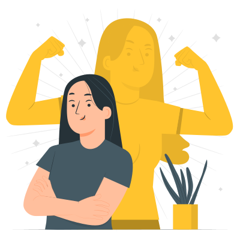
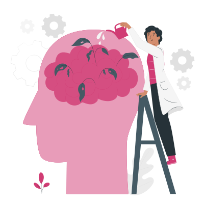

Ousadia
Saber inovar e se reinventar a cada dia, e não ter medo de se aventurar em uma nova tecnologia, emprego ou até mesmo em uma nova comunidade. E apesar de toda dificuldade, não desistir. Viva um bug de cada vez!
Aprendizado
Estar sempre disposto para aprender e conhecer, afinal no mundo da tecnologia somos eternos aprendizes. Buscar sempre ir além e reconhecer que não sabe de tudo. Seja o parâmetro para sua própria função recursiva!
Compartilhar
Estar sempre compartilhando conhecimento, experiências e assim ajudar a comunidade crescer. Quando você ensina, você aprende!